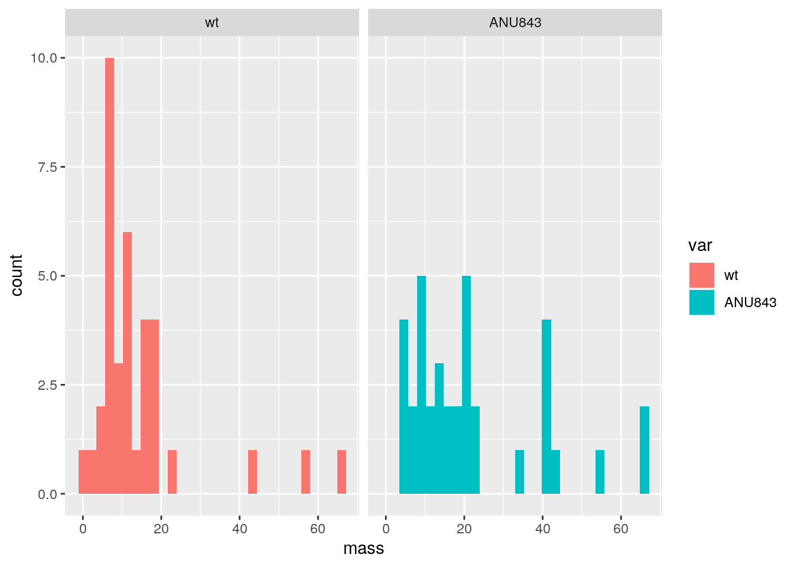

This data set studies the 12 types of rice and how 6 different types of chemical treatments effect their dry root and shoot masses. 6 of the rice types are wild type and 6 are genetically modified, which are abbreviated as "wt" and ANU843" respectively. In this study, a treatment is given with a specific type of fertilizer that is either the same composition as the treatment or a combination of them. There are a total of 72 observations and each of the 12 plants are tested 6 times.
library("tidyverse")## ── Attaching packages ───────────────────────────────────────────────────────────────────── tidyverse 1.3.0 ──## ✓ ggplot2 3.3.2 ✓ purrr 0.3.4
## ✓ tibble 3.0.3 ✓ dplyr 1.0.1
## ✓ tidyr 1.1.1 ✓ stringr 1.4.0
## ✓ readr 1.3.1 ✓ forcats 0.5.0## ── Conflicts ──────────────────────────────────────────────────────────────────────── tidyverse_conflicts() ──
## x dplyr::filter() masks stats::filter()
## x dplyr::lag() masks stats::lag()library("ggplot2")
library("DAAG")## Loading required package: latticedata(rice)As seen below, a one-way MANOVA was conducted to determine the effect of the six types of chemical treatments (F10, NH4Cl, NH4NO3, F10+ANU843, NH4Cl+ANU843, NH4NO3+ANU843) on the two dependent variables, dry root mass and dry shoot mass. The co-variance matrices for each group showed relative homogeneity and no univariate or multivariate outliers, therefore the MANOVA test is considered to be an appropriate analysis technique. Among the six different chemical treatments, all of them were determined to cause significant differences among the dry root and shoot masses. In order to further this data, univariate ANOVAs for each dependent variable were conducted as follow-up tests to the MANOVA, which were significant. Post hoc analysis was performed conducting pairwise comparisons to determine which treatments differed in dry root and shoot masses. All of the six treatments were found to differ significantly from each other, where the Pillai trace = 1.4061 and the p-value is less than 2.2e-16.
library(rstatix)##
## Attaching package: 'rstatix'## The following object is masked from 'package:stats':
##
## filtergroup <- rice$trt
DVs <- rice %>% select(RootDryMass, ShootDryMass)
sapply(split(DVs,group), mshapiro_test)## F10 NH4Cl NH4NO3 F10 +ANU843 NH4Cl +ANU843
## statistic 0.7762767 0.8144913 0.8766652 0.8120287 0.9622292
## p.value 0.00509795 0.01375675 0.07944717 0.01287874 0.8151196
## NH4NO3 +ANU843
## statistic 0.9610284
## p.value 0.7984067lapply(split(DVs,group), cov)## $F10
## RootDryMass ShootDryMass
## RootDryMass 139.1818 141.6364
## ShootDryMass 141.6364 714.0606
##
## $NH4Cl
## RootDryMass ShootDryMass
## RootDryMass 33.35606 90.84091
## ShootDryMass 90.84091 333.47727
##
## $NH4NO3
## RootDryMass ShootDryMass
## RootDryMass 21.51515 75.24242
## ShootDryMass 75.24242 532.60606
##
## $`F10 +ANU843`
## RootDryMass ShootDryMass
## RootDryMass 5.272727 4.090909
## ShootDryMass 4.090909 22.787879
##
## $`NH4Cl +ANU843`
## RootDryMass ShootDryMass
## RootDryMass 17.42424 46.25758
## ShootDryMass 46.25758 216.44697
##
## $`NH4NO3 +ANU843`
## RootDryMass ShootDryMass
## RootDryMass 27.24242 92.90909
## ShootDryMass 92.90909 413.54545test1 <-manova(cbind(RootDryMass,ShootDryMass)~trt, data=rice)
summary(test1)## Df Pillai approx F num Df den Df Pr(>F)
## trt 5 1.4061 31.254 10 132 < 2.2e-16 ***
## Residuals 66
## ---
## Signif. codes: 0 '***' 0.001 '**' 0.01 '*' 0.05 '.' 0.1 ' ' 1summary.aov(test1) ## Response RootDryMass :
## Df Sum Sq Mean Sq F value Pr(>F)
## trt 5 15136.7 3027.35 74.445 < 2.2e-16 ***
## Residuals 66 2683.9 40.67
## ---
## Signif. codes: 0 '***' 0.001 '**' 0.01 '*' 0.05 '.' 0.1 ' ' 1
##
## Response ShootDryMass :
## Df Sum Sq Mean Sq F value Pr(>F)
## trt 5 68326 13665.1 36.719 < 2.2e-16 ***
## Residuals 66 24562 372.2
## ---
## Signif. codes: 0 '***' 0.001 '**' 0.01 '*' 0.05 '.' 0.1 ' ' 1pairwise.t.test(rice$RootDryMass, rice$trt, p.adj = "none")##
## Pairwise comparisons using t tests with pooled SD
##
## data: rice$RootDryMass and rice$trt
##
## F10 NH4Cl NH4NO3 F10 +ANU843 NH4Cl +ANU843
## NH4Cl < 2e-16 - - - -
## NH4NO3 < 2e-16 0.0726 - - -
## F10 +ANU843 < 2e-16 0.0138 4.8e-05 - -
## NH4Cl +ANU843 < 2e-16 0.1939 0.0026 0.2282 -
## NH4NO3 +ANU843 < 2e-16 0.6327 0.1834 0.0037 0.0776
##
## P value adjustment method: nonepairwise.t.test(rice$ShootDryMass, rice$trt, p.adj = "none")##
## Pairwise comparisons using t tests with pooled SD
##
## data: rice$ShootDryMass and rice$trt
##
## F10 NH4Cl NH4NO3 F10 +ANU843 NH4Cl +ANU843
## NH4Cl 3.5e-10 - - - -
## NH4NO3 3.5e-05 0.0046 - - -
## F10 +ANU843 < 2e-16 8.1e-07 5.5e-12 - -
## NH4Cl +ANU843 5.1e-11 0.6431 0.0012 4.8e-06 -
## NH4NO3 +ANU843 1.5e-05 0.0088 0.8166 1.4e-11 0.0024
##
## P value adjustment method: noneFor this data set, the null hypothesis is that the mean mass of wild type rice and genetically modified rice will be the same. The alternative hypothesis is that the mean mass of both varieties of rice will vary. As seen in the histogram, the genetically modified rice tend to have higher masses than the wild type rice.
rice%>%group_by(variety)%>%summarize(s=sd(RootDryMass))%>%summarize(diff(s))## `summarise()` ungrouping output (override with `.groups` argument)## # A tibble: 1 x 1
## `diff(s)`
## <dbl>
## 1 -13.2rand_dist<-vector()
for(i in 1:5000){
new<-data.frame(mass=sample(rice$RootDryMass),var=rice$variety)
rand_dist[i]<-sd(new[new$var=="wt",]$mass)-
sd(new[new$var=="ANU843",]$mass)
}
mean(rand_dist < -13.24057 | rand_dist > 13.24057 )## [1] 2e-04ggplot(new,aes(mass,fill=var))+geom_histogram()+facet_wrap(~var,ncol=2)## `stat_bin()` using `bins = 30`. Pick better value with `binwidth`. ## Linear Regression Model
For the dry root mass of the samples, all the chemical treatments show to have a significant effect on the plant masses since all the p-values are less than 0.05. The same can be said for the dry shoot masses as well since all the calculated p-values are also less than 0.05. Assumptions of linearity, normality, and homoskedacticity are met. There weren't any significant results observed after the robust SE was performed. This model accounts for about 0.8493929 of the original data.
library("interactions")
library("sandwich")
library("lmtest")## Loading required package: zoo##
## Attaching package: 'zoo'## The following objects are masked from 'package:base':
##
## as.Date, as.Date.numericrice$RDM <- rice$RootDryMass - mean(rice$RootDryMass)
fit1<-lm(RDM~trt+fert, data= rice)
summary(fit1)##
## Call:
## lm(formula = RDM ~ trt + fert, data = rice)
##
## Residuals:
## Min 1Q Median 3Q Max
## -14.5000 -5.2083 -0.0833 4.1667 17.5000
##
## Coefficients: (2 not defined because of singularities)
## Estimate Std. Error t value Pr(>|t|)
## (Intercept) 31.431 1.841 17.07 <2e-16 ***
## trtNH4Cl -36.917 2.603 -14.18 <2e-16 ***
## trtNH4NO3 -32.167 2.603 -12.36 <2e-16 ***
## trtF10 +ANU843 -43.500 2.603 -16.71 <2e-16 ***
## trtNH4Cl +ANU843 -40.333 2.603 -15.49 <2e-16 ***
## trtNH4NO3 +ANU843 -35.667 2.603 -13.70 <2e-16 ***
## fertNH4Cl NA NA NA NA
## fertNH4NO3 NA NA NA NA
## ---
## Signif. codes: 0 '***' 0.001 '**' 0.01 '*' 0.05 '.' 0.1 ' ' 1
##
## Residual standard error: 6.377 on 66 degrees of freedom
## Multiple R-squared: 0.8494, Adjusted R-squared: 0.838
## F-statistic: 74.45 on 5 and 66 DF, p-value: < 2.2e-16resids<-fit1$residuals
fitvals<-fit1$fitted.values
ks.test(resids, "pnorm", mean=0, sd(resids)) ## Warning in ks.test(resids, "pnorm", mean = 0, sd(resids)): ties should not be
## present for the Kolmogorov-Smirnov test##
## One-sample Kolmogorov-Smirnov test
##
## data: resids
## D = 0.077529, p-value = 0.7798
## alternative hypothesis: two-sidedrice%>%ggplot(aes(trt,RDM))+geom_point()+geom_smooth(method = 'lm')## `geom_smooth()` using formula 'y ~ x'coeftest(fit1, vcov=vcovHC(fit1))[,1:2]## Estimate Std. Error
## (Intercept) 31.43056 3.557090
## trtNH4Cl -36.91667 3.960462
## trtNH4NO3 -32.16667 3.822148
## trtF10 +ANU843 -43.50000 3.623842
## trtNH4Cl +ANU843 -40.33333 3.773184
## trtNH4NO3 +ANU843 -35.66667 3.889663(sum((rice$RootDryMass-mean(rice$RootDryMass))^2)-sum(fit1$residuals^2))/sum((rice$RootDryMass-mean(rice$RootDryMass))^2)## [1] 0.8493929There weren't any major changes observed in the standard error values or p-values after bootstrapped standard errors were computed.
rice$RDM <- rice$RootDryMass - mean(rice$RootDryMass)
fit1<-lm(RDM~trt+fert, data= rice)
summary(fit1)##
## Call:
## lm(formula = RDM ~ trt + fert, data = rice)
##
## Residuals:
## Min 1Q Median 3Q Max
## -14.5000 -5.2083 -0.0833 4.1667 17.5000
##
## Coefficients: (2 not defined because of singularities)
## Estimate Std. Error t value Pr(>|t|)
## (Intercept) 31.431 1.841 17.07 <2e-16 ***
## trtNH4Cl -36.917 2.603 -14.18 <2e-16 ***
## trtNH4NO3 -32.167 2.603 -12.36 <2e-16 ***
## trtF10 +ANU843 -43.500 2.603 -16.71 <2e-16 ***
## trtNH4Cl +ANU843 -40.333 2.603 -15.49 <2e-16 ***
## trtNH4NO3 +ANU843 -35.667 2.603 -13.70 <2e-16 ***
## fertNH4Cl NA NA NA NA
## fertNH4NO3 NA NA NA NA
## ---
## Signif. codes: 0 '***' 0.001 '**' 0.01 '*' 0.05 '.' 0.1 ' ' 1
##
## Residual standard error: 6.377 on 66 degrees of freedom
## Multiple R-squared: 0.8494, Adjusted R-squared: 0.838
## F-statistic: 74.45 on 5 and 66 DF, p-value: < 2.2e-16boot_dat<- sample_frac(rice, replace=T)
samp_distn<-replicate(5000, {
boot_dat <- sample_frac(rice, replace=T)
fit1 <- lm(RDM~trt+fert, data=boot_dat)
coef(fit1)
})
samp_distn %>% t %>% as.data.frame %>% summarize_all(sd)## (Intercept) trtNH4Cl trtNH4NO3 trtF10 +ANU843 trtNH4Cl +ANU843
## 1 3.307668 3.704243 3.604108 3.362902 3.525857
## trtNH4NO3 +ANU843 fertNH4Cl fertNH4NO3
## 1 3.645509 NA NAanova(fit1)## Analysis of Variance Table
##
## Response: RDM
## Df Sum Sq Mean Sq F value Pr(>F)
## trt 5 15136.7 3027.35 74.445 < 2.2e-16 ***
## Residuals 66 2683.9 40.67
## ---
## Signif. codes: 0 '***' 0.001 '**' 0.01 '*' 0.05 '.' 0.1 ' ' 1After the logistic regression model is conducted, it can be seen that the mass of the roots has a significant relationship with the variety of rice, while mass of shoots didn't. The calculated AUC was 0.8375772, which shows that the logistic regression model created is a good representation of the original data.
fit<-glm(variety~RootDryMass,data=rice,family=binomial(link="logit"))
coeftest(fit)##
## z test of coefficients:
##
## Estimate Std. Error z value Pr(>|z|)
## (Intercept) 2.59033 0.71107 3.6429 0.0002696 ***
## RootDryMass -0.17907 0.05096 -3.5140 0.0004415 ***
## ---
## Signif. codes: 0 '***' 0.001 '**' 0.01 '*' 0.05 '.' 0.1 ' ' 1exp(coef(fit))## (Intercept) RootDryMass
## 13.3342038 0.8360462rice$prob<-predict(fit,type="response")
table(truth=rice$variety, prediction=rice$prob)%>%addmargins## prediction
## truth 8.21033727681637e-05 9.82027644449255e-05 0.00058831221790633
## wt 1 2 1
## ANU843 0 0 0
## Sum 1 2 1
## prediction
## truth 0.000703602661109279 0.00502242236811952 0.00600143908478248
## wt 1 1 1
## ANU843 0 0 0
## Sum 1 1 1
## prediction
## truth 0.00856394307729339 0.0102262102956793 0.0246705398212321
## wt 2 2 1
## ANU843 0 0 0
## Sum 2 2 1
## prediction
## truth 0.178241224027115 0.236824921056917 0.270695857269876
## wt 3 2 2
## ANU843 0 1 0
## Sum 3 3 2
## prediction
## truth 0.307459449181415 0.34684143318598 0.38843845702292 0.431726758569792
## wt 0 3 1 0
## ANU843 1 2 2 1
## Sum 1 5 3 1
## prediction
## truth 0.476083738083927 0.52082126786973 0.565227311795788 0.608610676577382
## wt 1 2 1 3
## ANU843 1 1 0 2
## Sum 2 3 1 5
## prediction
## truth 0.650343029921304 0.689892920817284 0.726848229004955
## wt 1 0 1
## ANU843 2 2 2
## Sum 3 2 3
## prediction
## truth 0.760925726911891 0.791968622980588 0.819934564801977
## wt 0 2 1
## ANU843 3 5 4
## Sum 3 7 5
## prediction
## truth 0.844877378824113 0.866925850919337 0.886262330082968
## wt 1 0 0
## ANU843 2 3 1
## Sum 3 3 1
## prediction
## truth 0.917681995881386 Sum
## wt 0 36
## ANU843 1 36
## Sum 1 72rice$logodds <-predict(fit, type= "link")
ggplot(rice, aes(x=logodds, fill=variety)) + geom_density() library(plotROC)
ROCplot<-ggplot(rice)+geom_roc(aes(d=variety,m=RootDryMass))
ROCplot## Warning in verify_d(data$d): D not labeled 0/1, assuming ANU843 = 0 and wt = 1!calc_auc(ROCplot)## Warning in verify_d(data$d): D not labeled 0/1, assuming ANU843 = 0 and wt = 1!## PANEL group AUC
## 1 1 -1 0.8375772The calculated AUC for all the response variables is 0.7959105, which means that the precision dropped from the earlier logistic regression model. After the lasso method was perfomed, the only variables determined to be relevant were root dry mass, trtNH4Cl, trtNH4NO3, trtF10+ANU843, trtNH4Cl +ANU843, and trtNH4NO3+ ANU843.
library("tidyverse")
library(lmtest)
library("pROC")## Type 'citation("pROC")' for a citation.##
## Attaching package: 'pROC'## The following object is masked from 'package:plotROC':
##
## ggroc## The following objects are masked from 'package:stats':
##
## cov, smooth, varlibrary("plotROC")
data(rice)
fit<-glm(variety~(.), data=rice,family=binomial(link="logit"))
coeftest(fit)##
## z test of coefficients:
##
## Estimate Std. Error z value Pr(>|z|)
## (Intercept) -2.6566e+01 4.4957e+05 -1e-04 1.0000
## PlantNo -1.9316e-11 2.4753e+04 0e+00 1.0000
## Block 4.7943e-11 1.7745e+05 0e+00 1.0000
## RootDryMass -8.5053e-13 8.7092e+03 0e+00 1.0000
## ShootDryMass -1.0844e-12 3.0002e+03 0e+00 1.0000
## trtNH4Cl -9.4495e-11 3.0232e+05 0e+00 1.0000
## trtNH4NO3 -6.5396e-11 2.7806e+05 0e+00 1.0000
## trtF10 +ANU843 5.3132e+01 3.5556e+05 1e-04 0.9999
## trtNH4Cl +ANU843 5.3132e+01 3.2422e+05 2e-04 0.9999
## trtNH4NO3 +ANU843 5.3132e+01 3.0158e+05 2e-04 0.9999
## fertNH4Cl NA NA NA NA
## fertNH4NO3 NA NA NA NAexp(coef(fit))## (Intercept) PlantNo Block RootDryMass
## 2.900701e-12 1.000000e+00 1.000000e+00 1.000000e+00
## ShootDryMass trtNH4Cl trtNH4NO3 trtF10 +ANU843
## 1.000000e+00 1.000000e+00 1.000000e+00 1.188486e+23
## trtNH4Cl +ANU843 trtNH4NO3 +ANU843 fertNH4Cl fertNH4NO3
## 1.188486e+23 1.188486e+23 NA NArice$prob<-predict(fit,type="response")
table(truth=rice$variety, prediction=rice$prob)%>%addmargins## prediction
## truth 2.90070146523778e-12 2.90070146524885e-12 2.90070146525252e-12
## wt 1 1 1
## ANU843 0 0 0
## Sum 1 1 1
## prediction
## truth 2.90070146526972e-12 2.90070146529454e-12 2.90070146532572e-12
## wt 1 1 1
## ANU843 0 0 0
## Sum 1 1 1
## prediction
## truth 2.90070146532612e-12 2.90070146533396e-12 2.90070146536794e-12
## wt 1 1 1
## ANU843 0 0 0
## Sum 1 1 1
## prediction
## truth 2.90070146537165e-12 2.90070146540369e-12 2.90070146541512e-12
## wt 1 1 1
## ANU843 0 0 0
## Sum 1 1 1
## prediction
## truth 2.90070146541537e-12 2.90070146542624e-12 2.900701465436e-12
## wt 1 1 1
## ANU843 0 0 0
## Sum 1 1 1
## prediction
## truth 2.9007014654585e-12 2.90070146546064e-12 2.90070146547445e-12
## wt 1 1 1
## ANU843 0 0 0
## Sum 1 1 1
## prediction
## truth 2.90070146549697e-12 2.90070146549979e-12 2.90070146550397e-12
## wt 1 1 1
## ANU843 0 0 0
## Sum 1 1 1
## prediction
## truth 2.90070146550402e-12 2.90070146551163e-12 2.90070146551296e-12
## wt 1 1 1
## ANU843 0 0 0
## Sum 1 1 1
## prediction
## truth 2.90070146552396e-12 2.90070146555277e-12 2.9007014655636e-12
## wt 1 1 1
## ANU843 0 0 0
## Sum 1 1 1
## prediction
## truth 2.90070146557381e-12 2.90070146557778e-12 2.9007014655978e-12
## wt 1 1 1
## ANU843 0 0 0
## Sum 1 1 1
## prediction
## truth 2.90070146560192e-12 2.90070146561676e-12 2.90070146561966e-12
## wt 1 1 1
## ANU843 0 0 0
## Sum 1 1 1
## prediction
## truth 2.90070146563465e-12 2.90070146572487e-12 2.9007014657275e-12
## wt 1 1 1
## ANU843 0 0 0
## Sum 1 1 1
## prediction
## truth 0.999999999997099 Sum
## wt 0 36
## ANU843 36 36
## Sum 36 72rice<-rice%>%mutate(y=ifelse(variety=="wt",1,0))
ROCplot<-ggplot(rice)+geom_roc(aes(d=y,m=RootDryMass+ShootDryMass))
ROCplotcalc_auc(ROCplot)## PANEL group AUC
## 1 1 -1 0.7959105fit <- glm(y~(.),data=rice,family="binomial")
prob <- predict(fit,type="response")
truth <- rice$variety
class_diag <- function(probs,truth){
tab<-table(factor(probs>.5,levels=c("FALSE","TRUE")),truth)
acc=sum(diag(tab))/sum(tab)
sens=tab[2,2]/colSums(tab)[2]
spec=tab[1,1]/colSums(tab)[1]
ppv=tab[2,2]/rowSums(tab)[2]
f1=2*(sens*ppv)/(sens+ppv)}
if(is.numeric(truth)==FALSE & is.logical(truth)==FALSE) truth<-as.numeric(truth)-1
data(rice)
set.seed(1234)
k=10
data<-rice[sample(nrow(rice)),]
folds<-cut(seq(1:nrow(rice)),breaks=k,labels=F)
diags<-NULL
for(i in 1:k){
train<-data[folds!=i,]
test<-data[folds==i,]
truth<-test$variety
fit<-glm(variety~(.), data=train, family = "binomial")
probs<-predict(fit,newdata = test,type="response")
diags<-rbind(diags,class_diag(probs,truth))
}## Warning in predict.lm(object, newdata, se.fit, scale = 1, type = if (type == :
## prediction from a rank-deficient fit may be misleading
## Warning in predict.lm(object, newdata, se.fit, scale = 1, type = if (type == :
## prediction from a rank-deficient fit may be misleading
## Warning in predict.lm(object, newdata, se.fit, scale = 1, type = if (type == :
## prediction from a rank-deficient fit may be misleading
## Warning in predict.lm(object, newdata, se.fit, scale = 1, type = if (type == :
## prediction from a rank-deficient fit may be misleading
## Warning in predict.lm(object, newdata, se.fit, scale = 1, type = if (type == :
## prediction from a rank-deficient fit may be misleading
## Warning in predict.lm(object, newdata, se.fit, scale = 1, type = if (type == :
## prediction from a rank-deficient fit may be misleading
## Warning in predict.lm(object, newdata, se.fit, scale = 1, type = if (type == :
## prediction from a rank-deficient fit may be misleading
## Warning in predict.lm(object, newdata, se.fit, scale = 1, type = if (type == :
## prediction from a rank-deficient fit may be misleading
## Warning in predict.lm(object, newdata, se.fit, scale = 1, type = if (type == :
## prediction from a rank-deficient fit may be misleading
## Warning in predict.lm(object, newdata, se.fit, scale = 1, type = if (type == :
## prediction from a rank-deficient fit may be misleadinglibrary(glmnet)## Loading required package: Matrix##
## Attaching package: 'Matrix'## The following objects are masked from 'package:tidyr':
##
## expand, pack, unpack## Loaded glmnet 4.0-2data(rice)
y<-as.matrix(rice$variety)
x<-model.matrix(variety~.,data=rice)[,-1]
cv<-cv.glmnet(x,y,family="binomial")
lasso<-glmnet(x,y,family="binomial",lambda=cv$lambda.1se)
coef(lasso)## 12 x 1 sparse Matrix of class "dgCMatrix"
## s0
## (Intercept) 5.0974232
## PlantNo .
## Block .
## RootDryMass 0.0466353
## ShootDryMass .
## trtNH4Cl 1.6626592
## trtNH4NO3 1.4299129
## trtF10 +ANU843 -12.6835103
## trtNH4Cl +ANU843 -12.8456164
## trtNH4NO3 +ANU843 -13.0751940
## fertNH4Cl .
## fertNH4NO3 .set.seed(1234)
k=10
data<-rice[sample(nrow(rice)),]
folds<-cut(seq(1:nrow(rice)),breaks=k,labels=F)
diags<-NULL
for(i in 1:k){
train<-data[folds!=i,]
test<-data[folds==i,]
truth<-test$variety
fit<-glm(variety~ShootDryMass*RootDryMass, data=rice, family = "binomial")
probs<-predict(fit,newdata = test,type="response")
diags<-rbind(diags,class_diag(probs,truth))
}